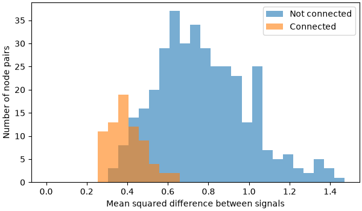
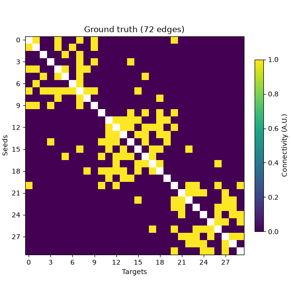
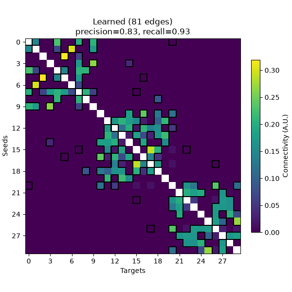
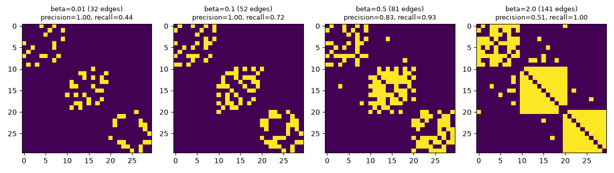
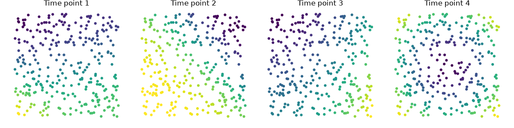
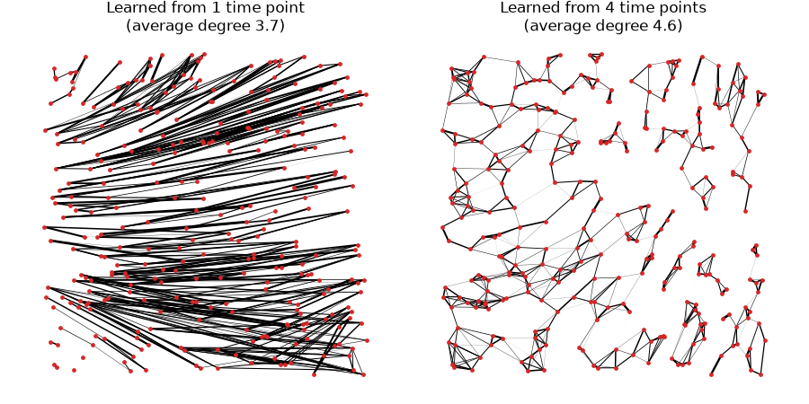

Note
Go to the end to download the full example code.
Learn a functional connectivity graph#
This example demonstrates learn_graph(), which estimates a
sparse functional connectivity graph directly from signal smoothness
[1], rather than from pairwise similarity/coherence computed
independently per edge. All edge weights are learned jointly, which was found to be
more robust than Phase Lag Index for short recordings and to better capture
individual-specific connectivity in real MEG data [2].
Signals are smooth on a graph if nodes connected by strong edges have similar signals.
learn_graph() finds the graph on which the given signals are
smoothest, with penalties that keep every node connected and control how dense the
graph is.
Using synthetic data with a known structure, we show how well the learned graph
recovers a ground-truth graph, how beta controls the sparsity of the learned graph,
and how a graph learned from several smooth signals recovers the geometry they live on.
# Authors: Payam S. Shabestari <payam.sadeghi74@gmail.com>
#
# License: BSD (3-clause)
#
# sphinx_gallery_thumbnail_number = 6
import matplotlib.pyplot as plt
import numpy as np
from matplotlib.collections import LineCollection
from scipy.spatial.distance import pdist
from mne_connectivity import Connectivity, learn_graph
from mne_connectivity.viz import plot_connectivity
Learning a Known Graph from Synthetic Smooth Signals#
To see whether learn_graph() recovers a graph structure we
already know, we build a sparse random graph with three communities: nodes are
connected with probability 0.4 within a community and 0.02 across communities. We
then generate signals that are smooth on that graph, by drawing Gaussian samples whose
covariance is the pseudo-inverse of the graph Laplacian, so that strongly connected
nodes have similar values.
rng = np.random.default_rng(3)
n_nodes = 30
community = np.repeat([0, 1, 2], n_nodes // 3)
p_edge = np.where(community[:, np.newaxis] == community, 0.4, 0.02)
A_true = np.triu(rng.random((n_nodes, n_nodes)) < p_edge, k=1).astype(float)
A_true += A_true.T
laplacian = np.diag(A_true.sum(axis=1)) - A_true
eigvals, eigvecs = np.linalg.eigh(laplacian)
# square root of the Laplacian pseudo-inverse, discarding the constant (zero) mode
smooth_filter = np.zeros_like(eigvals)
smooth_filter[eigvals > 1e-10] = 1.0 / np.sqrt(eigvals[eigvals > 1e-10])
n_times = 1000
noise = rng.standard_normal((n_nodes, n_times))
X = eigvecs @ (smooth_filter[:, np.newaxis] * (eigvecs.T @ noise))
triu = np.triu_indices(n_nodes, k=1)
true_edges = A_true[triu] > 0
def precision_recall(W):
"""Compare the edges of a learned graph with the ground-truth edges."""
learned_edges = W[triu] > 0
n_correct = np.count_nonzero(learned_edges & true_edges)
precision = n_correct / max(np.count_nonzero(learned_edges), 1)
recall = n_correct / np.count_nonzero(true_edges)
return precision, recall
To see what this smoothness looks like in the data, we compute, for every pair of
nodes, how different their signals are (the mean squared difference over time
samples). Pairs of nodes that are connected in the ground-truth graph have more
similar signals than pairs that are not connected. These pairwise differences are
what learn_graph() uses: the more similar the signals of two
nodes are, the cheaper it is to connect them.
pair_differences = pdist(X, metric="sqeuclidean") / n_times # same order as triu
fig, ax = plt.subplots(figsize=(6, 3.5), layout="constrained")
bins = np.linspace(0, pair_differences.max(), 30)
ax.hist(pair_differences[~true_edges], bins=bins, alpha=0.6, label="Not connected")
ax.hist(pair_differences[true_edges], bins=bins, alpha=0.6, label="Connected")
ax.set(xlabel="Mean squared difference between signals", ylabel="Number of node pairs")
ax.legend()

<matplotlib.legend.Legend object at 0x7a71d54e9940>
Now we learn a graph from X and compare it to the ground truth, using the default
parameters (alpha=0.5, beta=0.5). Because the model penalizes non-smoothness, an
edge is only given a non-zero weight if the signals at its two nodes are similar, so
the learned graph is sparse. We summarize how well its edges match the ground truth
with the precision (the fraction of learned edges that are true edges) and the
recall (the fraction of true edges that were learned). Note that the learned weights
are only defined up to an overall scale (set by alpha), so we compare the edges
rather than the weight values.
conn = learn_graph(X, verbose=False)
W_learned = conn.get_data(output="dense")
precision, recall = precision_recall(W_learned)
We can plot both graphs with plot_connectivity().
conn_true = Connectivity(
data=A_true[triu], n_nodes=n_nodes, indices="upper", method="learn_graph"
)
fig_true = plot_connectivity(conn_true, cmap="viridis")
fig_true.axes[0].set_title(f"Ground truth ({np.count_nonzero(true_edges)} edges)")
fig_learned = plot_connectivity(
conn, cmap="viridis", mask=A_true.astype(bool), mask_style="contour"
)
fig_learned.axes[0].set_title(
f"Learned ({np.count_nonzero(W_learned[triu])} edges)\n"
f"precision={precision:.2f}, recall={recall:.2f}"
)


Text(0.5, 1.0, 'Learned (81 edges)\nprecision=0.83, recall=0.93')
Effect of beta on Graph Sparsity#
The alpha term (a logarithmic penalty on the node degrees) only guarantees that
every node keeps at least one edge, i.e., that no node is isolated. On its own
(beta=0), it gives the sparsest graph that satisfies this. The beta term
penalizes large edge weights, which spreads the weight over more edges and so makes
the graph denser. Which edges are learned depends only on the product
alpha * beta: changing alpha and beta while keeping their product fixed
only rescales the edge weights [1]. Here, we keep alpha
fixed and vary beta. A sparser graph contains mostly true edges (high precision)
but misses some of them (low recall), whereas a denser graph finds all true edges at
the cost of including spurious ones. Instead of tuning alpha and beta by hand,
the desired average number of edges per node can also be given directly with
avg_degree, as shown in the next section.
betas = [0.01, 0.1, 0.5, 2.0]
fig, axes = plt.subplots(1, len(betas), figsize=(3 * len(betas), 3.4))
for ax, beta in zip(axes, betas):
conn_beta = learn_graph(X, beta=beta, max_iter=5000, verbose=False)
W_beta = conn_beta.get_data(output="dense")
precision, recall = precision_recall(W_beta)
ax.imshow(W_beta > 0, cmap="viridis")
ax.set_title(
f"beta={beta} ({np.count_nonzero(W_beta[triu])} edges)\n"
f"precision={precision:.2f}, recall={recall:.2f}",
fontsize=9,
)
fig.tight_layout()

Learning the Geometry Behind Smooth Signals#
In the example above, the signals were smooth on the graph: they were generated from
the graph, so that strongly connected nodes have similar values. A graph can also be
learned from signals that are smooth for another reason, for instance because they
vary smoothly in space. Here, adapting the graph-learning tutorial
that Vassilis Kalofolias wrote for PyGSP, we place nodes at random positions in a 2D
square, and define four smooth functions of the position. The signal of each node then
has four time points, each one being the value of one of the functions at the node’s
location; the coordinates of the nodes are never given to
learn_graph().
n_nodes = 300
coords = rng.uniform(size=(n_nodes, 2))
x, y = coords.T
# Adapted from the PyGSP graph-learning tutorial by V. Kalofolias
# (https://github.com/epfl-lts2/pygsp/pull/57), Copyright (c) 2014, EPFL LTS2,
# released under the BSD-3-Clause license.
signals = np.column_stack(
[
(-np.sin((2 - x - y) ** 2) / 2 + np.cos(y * 3)) / 2,
np.cos((x + y) ** 2),
((x - 0.5) ** 2 + (y - 0.5) ** 3 + x - y) * 3,
np.sin(3 * ((x - 0.5) ** 2 + (y - 0.5) ** 2)),
]
) # shape (n_nodes, n_times)
fig, axes = plt.subplots(1, 4, figsize=(12, 3))
for i_time, ax in enumerate(axes):
ax.scatter(x, y, c=signals[:, i_time], s=12, cmap="viridis")
ax.set_title(f"Time point {i_time + 1}")
ax.set_aspect("equal")
ax.set_axis_off()
fig.tight_layout()

We learn one graph from the first time point only, and one from all four. Rather
than tuning alpha and beta, we ask for graphs with about 5 edges per node on
average with avg_degree, which selects the parameters automatically
[3].
With a single time point, nodes with similar values are connected, even if they lie far apart (on the same level line of the function), so the learned graph does not reflect the layout of the nodes. With all four time points, only nodes whose values are similar at every time point are connected, which in practice means nodes that are close in space: the learned graph recovers the geometry of the nodes, with each node connected to a handful of its neighbors.
def plot_graph(ax, W, title):
"""Draw the edges of a learned graph at the node positions."""
i_node, j_node = np.nonzero(np.triu(W, k=1))
weights = W[i_node, j_node]
segments = np.stack([coords[i_node], coords[j_node]], axis=1)
ax.add_collection(
LineCollection(segments, linewidths=2 * weights / weights.max(), color="k")
)
ax.scatter(x, y, s=6, color="tab:red", zorder=2)
ax.set_title(f"{title}\n(average degree {2 * len(weights) / n_nodes:.1f})")
ax.set_aspect("equal")
ax.set_axis_off()
fig, axes = plt.subplots(1, 2, figsize=(9, 4.5))
for ax, n_times_used in zip(axes, (1, 4)):
# a single time point needs more iterations to converge
conn_geo = learn_graph(
signals[:, :n_times_used], avg_degree=5, max_iter=5000, verbose=False
)
plot_graph(
ax,
conn_geo.get_data(output="dense"),
f"Learned from {n_times_used} time point{'s' if n_times_used > 1 else ''}",
)
fig.tight_layout()
plt.show()

Which Graph Is Learned Depends on What Makes Signals Similar#
In neurophysiological recordings, the signal of each node is its time course, and the learned graph connects nodes whose signals are similar, whatever the reason for that similarity. In sensor space, field spread makes nearby sensors record similar signals, so a graph learned from sensor data can largely reflect the sensor layout, much like the geometry recovered above. Such a graph is useful when the aim is a data-driven description of how the sensors relate to each other, e.g., to filter or classify sensor data with graph signal processing methods. When the aim is instead to find functional connections between brain regions, spatial proximity is a confound, and learning the graph from source-reconstructed signals (e.g., label time courses) reduces, though does not remove, the similarity caused by signal leakage. In both cases, as the example above shows, the signals need to vary in many independent ways (here, over four time points; in recordings, over many time points) for the graph to capture an underlying structure rather than coincidental similarities of values.
References#
Total running time of the script: (0 minutes 9.614 seconds)